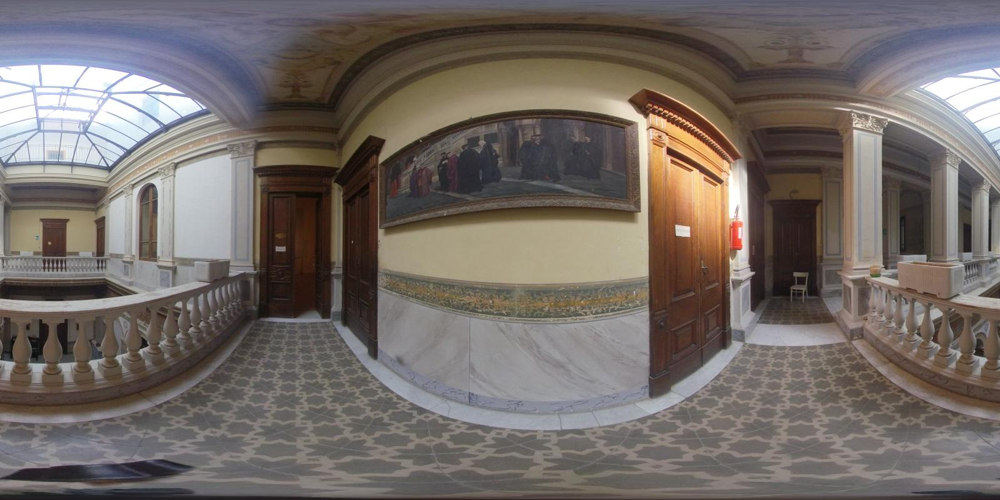
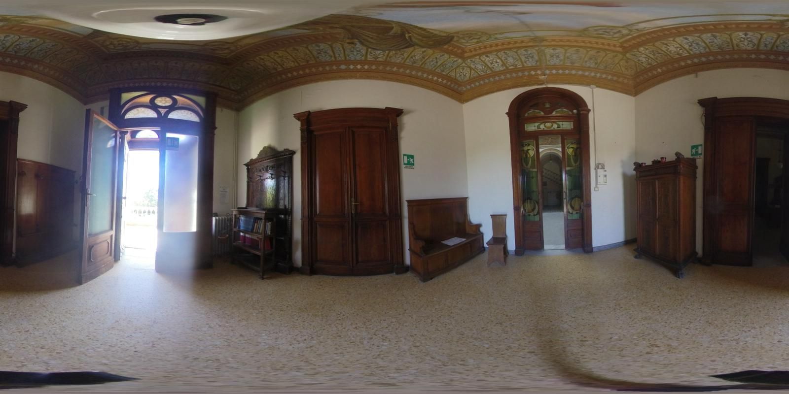

Il piano nobile di Villa Ventilj rappresenta una delle parti più prestigiose dell'edificio, situata al primo piano dell'edificio, dove sono collocate le stanze del Museo Pagliaccetti e un tempo vi erano le camere da letto delle suore di carità
⏸